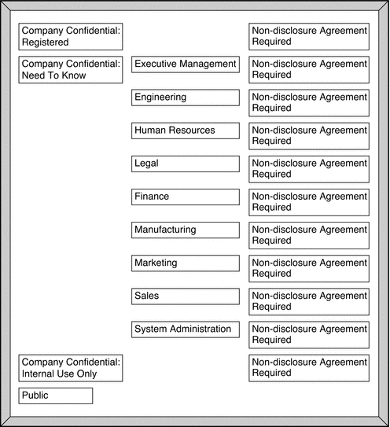

Document Information
Preface
1. Labels in Trusted Extensions Software
2. Planning Labels (Tasks)
Sources for Encodings Files
3. Making a Label Encodings File (Tasks)
4. Labeling Printer Output (Tasks)
5. Customizing LOCAL DEFINITIONS
6. Example: Planning an Organization's Labels
A. Sample Label Encodings File
Index
|
Planning Labels (Task Map)
Planning labels requires a general knowledge of site security, and specific knowledge of
the syntax of the label_encodings file. Task |
Description |
For Instructions |
|---|
Study and outline your label encodings
file |
Make a label encodings file that enforces your site security policy. |
How to Strategize for Labels |
Build an
extensible label_encodings file |
Create a file that can be modified without affecting existing
label definitions. |
How to Plan the Encodings File |
How to Strategize for Labels
- Allow time to build a correct label_encodings file.
Building the encodings for a site and making the encodings correct can be
a time-consuming process. A system cannot be configured until the correct label_encodings
file is installed.
- Know your site's security policy.
Many sites already have a security policy that was developed according to government methods.
Commercial businesses, even businesses that do not have much experience in planning labeled
security, can start by examining their goals for information protection. These goals can
be used to make some common-sense decisions about how to use labels. If
the company has developed legal requirements for labeling printed information and email, those
guidelines are a good place to start.
- Study the U. S. government label encodings file.
The government's description of the file is in the Compartmented Mode Workstation Labeling: Encodings Format: Defense Intelligence Agency
document [DDS-2600-6216-93].
- Customize the LOCAL DEFINITIONS section for your site.
For suggestions and examples, see Chapter 5, Customizing LOCAL DEFINITIONS.
- Finalize your encodings before installing Trusted Extensions.
Changing the label_encodings file on a running system is risky. For more information,
see the label_encodings(4) man page.
How to Plan the Encodings FileThe following practices help create a correct label_encodings file that can be safely
extended later.
Note - For CLASSIFICATIONS and, COMPARTMENTS, the security administrator role can later change the textual
representation. However, the integer and bit values cannot be changed without potentially serious complications.
- Create a label_encodings file.
For ideas, see Sources for Encodings Files. For the procedure, see Managing Label Encodings (Task Map).
- Leave room to add items.
- Leave gaps when you number classifications.
For example, you could number classifications in increments of 10. The increments allow intermediate
classifications to be added later.
- Leave gaps in compartment bits.
Space compartment bit numbers for possible later additions.
- Reserve some initial compartment bits for later definition.
If your site uses inverse compartments, see Default and Inverse Words. To learn more about
inverse compartments, see the DIA reference, Compartmented Mode Workstation Labeling: Encodings Format.
- Determine classifications for the site.
As described in Figure 1-2, the total number of classification values that you can use
is 254. Do not use classification 0. The system treats a classification value of 10 as more security-sensitive than a
classification value of 2. The textual representations are not used to determine security
levels. The same classification value cannot be assigned to different names. Each classification must
be higher or lower, or disjoint, from any other classification. No two labels
can evaluate to the same level. A table can be used to plan classifications. For a completed example, see
Table 6-2.
- Decide on compartments.
Decide how data and programs are grouped. Decide whether any data or programs
can be intermixed. For example, perhaps purchase order data should not be seen
by programs that manage personnel files. Perhaps purchase order data should be accessible
to programs that deal with shipment tracking problems. At this point, do not consider users. Think in terms of what, not
who.
- Design the names.
CLASSIFICATIONS and WORDS in the label_encodings file have two forms: a mandatory long
name and an optional short name. Short names can be entered interchangeably with
long names when labels are being specified.
- Arrange the relationships.
Compartments are not intrinsically hierarchical. However, compartments can be configured to have hierarchical relationships.
Before setting up relationships, study the example section of Compartmented Mode Workstation Labeling: Encodings Format. One way to make this step easier is to use a large
board and pieces of paper that are marked with your classifications and compartments.
For an example, see Figure 2-1. With this method, you can visualize the relationships and
rearrange the pieces until they all fit together.
Note - Unless you are creating a set of encodings that must be compatible with
another organization's labels, you can assign any valid number as a compartment bit.
Keep track of the numbers that you use and their relations to
each other.
Figure 2-1 Sample Planning Board for Label Relationships
- Decide which clearances to assign to which users.
You can use a table to plan clearances. For a completed example, see
Table 6-5. When you assign a clearance to a user, the classification must dominate all
classifications at which the user can work. The clearance can be equal to
the user's highest work classification. The compartments in the clearance must include all
compartments that the user might need.
- Arrange the labels in order of increasing sensitivity.
- Associate the definitions for each word with an internal format of integers, bit
patterns, and logical relationship statements.
A table can be used to keep track of compartment bit assignments. For
a completed example, see Table 6-4.
- Copy the WORDS section under SENSITIVITY LABELS to the INFORMATION LABELS section.
Although Trusted Extensions does not support information labels, the INFORMATION LABELS: WORDS: section must
be identical to the SENSITIVITY LABELS: WORDS: section to be a valid encodings file.
- Decide which colors should be associated with which labels.
For suggestions and examples, see Specifying Colors for Labels.
- Analyze the label relationships.
On a system that is configured with Trusted Extensions, use the chk_encodings -a command to
write a detailed report on the label relationships in your file. # chk_encodings -a encodings-file
|